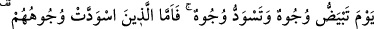
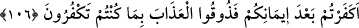
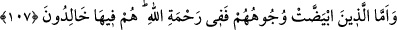

yoluna koysun ve ölünceye kadar bu yoldan ayırmasın, fazl-u kemal sahibi kişilerle
haşreylesin.
106. Nice yüzlerin ağardığı, nice yüzlerin de karardığı günü (düşünün.) İmdi,
yüzleri kararanlara: İnanmanızdan sonra kâfir mi oldunuz? Öyle ise inkâr etmiş
olmanız yüzünden tadın azabı! (denilir).
Yani ey inananlar, birçok yüzün ağardığı, birçok yüzün de karardığı günü hatırlayın.
Yüzlerin ağarması ve kararması yüzlerde sevinçten hâsıl olan bir parlaklık zuhûrundan
ve korku emâresi görülmesinden kinâyedir. İstediğini kazanan ve emeline nâil olan
birine: “Sevindi” mânasına “yüzü ağardı” denir. Başına istenmedik bir olay gelen birine
de “rengi atmış ve görüntüsü değişmiş, ya da rengi kararmış” denir.
Bu kelimelere yukarıda anlatıldığı gibi kinâye mânası verirsek âyetin anlamı şöyle
olur: Kıyâmet günü, mü’mine dünyada iken işlemiş olduğu bütün amelleri gösterilir.
Eğer bu davranışlar hasene, iyilik cinsinden ise mü’min, Allah Teâlâ’nın nîmet ve
fazlından dolayı sevinir. Kâfir ise çirkin amellerini görünce, gam ve kederi şiddetlenir.
İkinci bir görüş olarak yüzlerin ağarması ve kararmasının gerçek mânada kullanıldığı
söylenmiştir. Böylece, ehl-i hak, yüzlerinin ve amel defterlerinin beyazlığı, ciltlerinin
parlaklığı, önlerinde ve sağ taraflarında bir nur bulunması ile işâretlenir; ehl-i bâtıl ise,
bütün bunların zıddı ile vasıflanmaktadır. Ağarma ve kararmanın hakiki mânada
yüzlerinde ortaya çıkışının hikmeti şudur: Saîd olanlar, kavimleri, kendilerinin ehl-i
saâdetten olduğunu bildikleri için sevinç duyarlar. Cenâb-ı Hak bu husûsu şöyle
bildirir: “Keşke milletim, Rabbimin beni bağışladığını ve beni ikrâma mazhar
olanlardan kıldığını bilseydi.” (Yâsîn, 36/26, 27). Cehennemlik olan şakîler ise,
saidlerin aksine büyük bir üzüntü duyarlar.
“Yüzleri kararanlara: “İnandıktan sonra inkâr mı ettiniz?” denilir. Bu kişilerden
maksadın, ehl-i kitap olduğu açıktır. ‘İnandıktan sonra inkâr etmeleri’ ise, Hz.
Peygamber’in, risâletinden önce onun peygamberliğine inanırken, daha sonra bunu inkâr
etmeleridir. Bu kişilerden maksat, bütün kâfirler de olabilir. Çünkü “mîsâk günü”
tevhîdi ikrâr ettikten sonra dünyada inkâr etmişlerdir.
Kur’ân’ı ve Hz. Muhammed’i inkâr etmeniz sebebiyle büyüklükle vasfedilen “azabı
tadın, denir.”